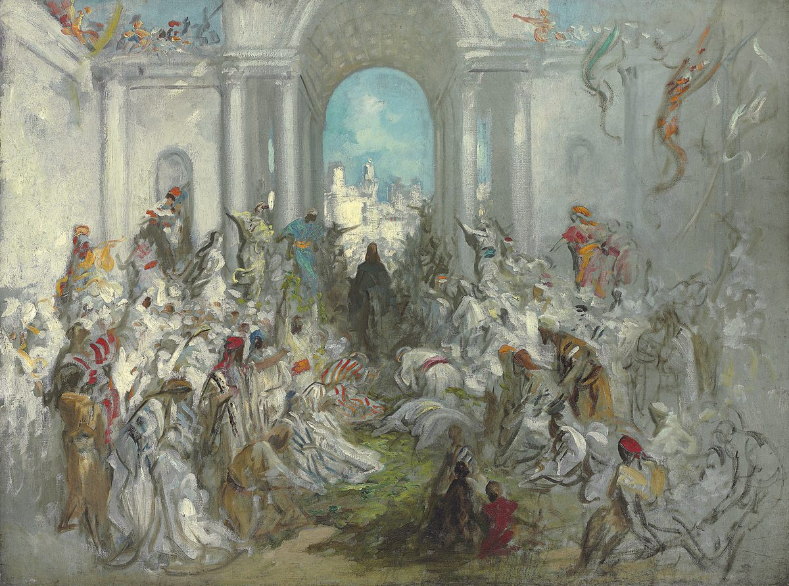

Salmo 118 — La Traducción Mister

Salmo 118:25–26. La multitud de Mateo 21:9 grita «Hosanna» y «Bendito el que viene en el nombre de Jehová», que son estos dos versículos. El boceto es de Doré, de la entrada en Jerusalén; el salmo mismo no dice nada de una ciudad ni de una cabalgata, y nombra una procesión hasta los cuernos del altar.

Notas del traductor — versículo por versículo
⭐ Cuatro voces. El salmo abre como una liturgia con un guía y una congregación: a todos se les dice que den gracias (versículo 1), y luego se nombran tres grupos para responder, Israel (2), la casa de Aarón (3) y los que temen a Jehová (4), cada uno con la misma línea. Ibn Ezra dice que los santos de Israel se nombran primero por su alto rango, porque son los que más deben agradecer, y que luego el versículo incluye a los que temen a Dios en todos los pueblos. Rashi lee «los que temen a Jehová» como los hijos de Leví, que se juntaron con Moisés ante el becerro de oro (Éxodo 32:26) y pelearon contra su propio pueblo cuando dijeron «démonos una cabeza, y volvamos a Egipto» (Números 14:4, ambos ya en estas páginas). Radak registra que los rabinos discrepaban sobre quién habla: unos decían que David, otros que los días del Mesías, y él toma el salmo como Israel hablando junto, como uno solo, desde el destierro. Si es David, dice, la casa de Aarón se nombra porque Saúl mató a Nob, la ciudad de los sacerdotes (1 Samuel 22:19, ya en estas páginas), y David les pide que den gracias por su reinado.
⭐ «Para siempre es su amor leal». El estribillo ki le-olam chasdo está en cuarenta y un versículos de la Biblia hebrea. Veintiséis son las líneas del Salmo 136, y cinco están en este salmo, los cuatro de los versículos 1–4 y el último. El resto son uno en cada uno de los Salmos 106 y 107, Esdras 3:11 y Jeremías 33:11, y las Crónicas, donde los levitas lo cantan cuando se instala el arca y en la dedicación del templo (1 Crónicas 16, 2 Crónicas 5 y 7, y en la batalla de Josafat en 2 Crónicas 20). Chesed es «amor leal», como en Salmo 100:5 y 103:8 (diccionario), y le-olam es «para siempre». La RV 1909 y la RV60 tienen «para siempre es su misericordia», la NVI «su gran amor perdura para siempre» y la TNM «su bondad amorosa es hasta tiempo indefinido». El griego tiene eleos, «misericordia», y la Douay inglesa lo sigue: «his mercy endureth for ever».
⚠ «Den gracias». El verbo es hodu, de yadah, la raíz del nombre de Judá (diccionario). La RV 1909 y la RV60 tienen «alabad», la NVI «den gracias» y la TNM «den gracias», y la Douay inglesa «give praise to», según el latín. El griego tiene exomologeisthe, «confiesen», y pone Allēlouia a la cabeza del salmo, lo que el hebreo no tiene. Este es el último de los seis salmos, del 113 al 118, que la tradición judía llama el Hallel. La Misná hace que el pueblo en el patio del templo recite el Hallel mientras se degüellan los corderos de la Pascua (Pesajim 5:7, en el inglés de Sefaria, no comprobado con el hebreo), y en el séder el que guía lo termina sobre la cuarta copa (Pesajim 10:7).
⭐ «La angustia… un lugar espacioso». Metsar es un lugar estrecho, un apuro, y merjav es su contrario (diccionario). Ibn Ezra dice que el versículo nombra a Jah dos veces, «una gracia de la lengua santa», y pone el lugar ancho frente al estrecho. El cántico del propio David tiene el mismo giro: «me sacó a un lugar amplio» (2 Samuel 22:20, ya en estas páginas). Radak da las dos lecturas del salmo: si habla David, el lugar estrecho es donde se escondió en cuevas y fortalezas mientras huía; si habla Israel, es el destierro. La RV 1909 tiene «desde la angustia invoqué á JAH» y «poniéndome en anchura», la RV60 «poniéndome en lugar espacioso» y la NVI «dándome libertad». La TNM tiene «en un lugar espacioso». El griego tiene ek thlipseōs, «desde la aflicción», y eis platusmon, «en un ensanchamiento».
⭐ «Jehová está por mí». El hebreo es Yehová li, «Jehová es mío» o «por mí», sin verbo. La pregunta de Pablo sigue las mismas palabras: «Si Dios está por nosotros, ¿quién contra nosotros?» (Romanos 8:31, ya en estas páginas). El Salterio griego tiene Kyrios emoi boēthos, «Jehová es mi ayudador», y la carta a los Hebreos cita esa forma: «Jehová es mi ayudador; no temeré. ¿Qué me hará el hombre?» (Hebreos 13:6, ya en estas páginas). La Douay inglesa también tiene «my helper» aquí, a partir del griego. La RV 1909 tiene «Jehová está por mí», la RV60 «Jehová está conmigo» y la TNM «Jehová está de mi parte». La pregunta que sigue, «¿Qué puede hacerme un ser humano?», es la que hace el Salmo 56:12 con otro orden de palabras (ya en estas páginas). El versículo 7 lo dice con más fuerza: «Jehová está por mí entre los que me ayudan», y la RV60 tiene «entre los que me ayudan» y la TNM «entre los que me ayudan, de manera que yo mismo», con la extraña preposición del hebreo. Ibn Ezra cuenta que el rabino Moisés lo toma por Jehová solo frente a todos los ayudantes, y prefiere el sentido más llano: que Jehová ayuda a los que ayudan y estos ven su venganza sobre los enemigos.
⚠ «Refugiarse… confiar». Los versículos 8 y 9 usan dos verbos, jasá, «refugiarse», y batáj, «confiar» (diccionario), y el estante casi siempre los junta. La RV 1909 tiene «esperar en Jehová» y «esperar en hombre», la RV60 «confiar en Jehová» y «confiar en el hombre», la NVI «refugiarse en» y «confiar en el hombre», y la TNM «refugiarse en Jehová» y «confiar en el hombre terrestre». El griego usa un verbo para la confianza del versículo 8 y otro para la esperanza del 9, y la Douay inglesa tiene «to confide in» y «to have confidence in». Rashi dice que jasayón es la sombra que da una cosa, algo pequeño, y bitajón un apoyo sano y fuerte, y aun así refugiarse en Jehová es mejor que la promesa de los seres humanos. Nedivim en el versículo 9 son los nobles (diccionario): la RV 1909 y la RV60 tienen «príncipes», la NVI «gente poderosa» y la TNM «nobles». Ibn Ezra dice que se llaman así porque son los más honrados entre los hijos de los hombres.
⭐ «Las corté». El verbo amilam está en tres versículos de la Biblia hebrea, y los tres son el estribillo de este pasaje, los versículos 10, 11 y 12. Se escribe como el verbo de la circuncisión, mul (Génesis 17:10; diccionario), y los léxicos se dividen sobre si es la misma raíz. Rashi lo toma como «las cortaré» y lo une al marchitarse del Salmo 90:6 (ya en estas páginas), e Ibn Ezra hace lo mismo, y añade que el rabino Moisés lo derivó de otra raíz y lo llama «lejano». Radak anota que su vocal cambia en la pausa y dice que significa lo mismo, «las cortaré». El estante está dividido en el sentido y en el tiempo. La RV 1909 tiene «yo los romperé», la RV60 «yo las destruiré», la NVI «las aniquilé» y la TNM «seguí manteniéndolas a distancia». El griego tiene ēmunamēn autous, «me defendí de ellos», y la Douay inglesa «I have been revenged on them».
⭐ «Todas las naciones». Rashi dice que el salmo habla de las guerras de Gog y Magog, cuando todas las naciones estarán allí, como está escrito: «reuniré a todas las naciones en Jerusalén para la batalla» (Zacarías 14:2). Radak, si habla David, lo lee de Israel y los filisteos cuando David llegó a Aquis, y de las naciones que quemaron Siclag (1 Samuel 30:1, ya en estas páginas). La línea siguiente duplica el verbo, sabbuni gam-sebabuni, «me rodearon, sí, me rodearon», e Ibn Ezra dice que repite «como se dice una y otra vez “Jehová es mi fuerza y mi fortaleza”». La TNM tiene «Me cercaron, sí, me tuvieron cercado».
⚠ «Como abejas… un fuego de espinos». Las abejas son lo que es un enjambre de enemigos en el discurso de Moisés, «los persiguieron como hacen las abejas» (Deuteronomio 1:44), e Isaías llama a Asiria misma «la abeja que está en la tierra de Asiria» (Isaías 7:18, ambos ya en estas páginas). La imagen siguiente es lo contrario de la picadura de un enjambre: un fuego de espinos se enciende y se va. Las letras de de’ajú, «se extinguieron», están en tres versículos de la Biblia hebrea: aquí, Job 6:17 e Isaías 43:17, «se han extinguido, se han apagado como una mecha» (ya en estas páginas). Solo aquí y en Isaías 43:17 es esa forma exacta; Job 6:17 tiene el pasivo nid’ajú. Rashi dice que toda palabra de esta raíz cae sobre el saltar y el brincar, una llama que salta de la mecha y se apaga, e Ibn Ezra dice que significa lo mismo que «apagados» y que los espinos no duran. La RV 1909 tiene «fueron apagados como fuegos de espinos», la RV60 «se enardecieron como fuego de espinos», la NVI «se consumieron como zarzas en el fuego» y la TNM «fueron extinguidas como un fuego de zarzas». El griego tiene «como abejas en torno a un panal», que añade el panal, y «se encendieron como fuego entre espinos».
⭐ «Me empujaste con fuerza». El verbo está duplicado, dachoh dechitani, «empujando, me empujaste», y Rashi dice que el «tú» es el enemigo. La RV 1909 tiene «Empujásteme con violencia para que cayese», la NVI «Me empujaron con violencia para que cayera» y la TNM «Me empujaste reciamente para que cayera», y la Douay inglesa «Being pushed I was overturned», que es el griego ōstheis anetrapēn, «empujado, fui volcado». Ibn Ezra dice que el Nombre de «pero Jehová me ayudó» es el mismo Nombre que el salmo ha nombrado antes, como si dijera: ese Jehová, allí, me ayudó.
⭐ «Mi fortaleza y mi cántico es Jah». Las palabras ozzi ve-zimrat Yah están en tres versículos de la Biblia hebrea: Éxodo 15:2 (ya en estas páginas, donde la página imprime el nombre, «Jehová es mi fortaleza y mi cántico»), Isaías 12:2 y aquí. La forma es rara, y Rashi, Radak e Ibn Ezra se detienen en ella. Zimrat es la forma que toma un sustantivo ante otro sustantivo, de modo que se lee «el cántico de Jah», y Rashi dice que tiene que unirse al Nombre y que «mi fortaleza» lleva una yod de más para cubrir las dos: mi fortaleza y el cántico del poder del Santo fueron salvación para mí. Radak dice que la yod de ozzi vale por las dos palabras, de modo que es zimrati, «mi cántico», e Ibn Ezra cuenta que el rabino Moisés dice lo mismo y pone una objeción. La RV 1909 tiene «Mi fortaleza y mi canción es JAH», la RV60 «Mi fortaleza y mi cántico es JAH», la NVI «mi fuerza y mi canción» y la TNM «Jah es mi abrigo y [mi] poder», y la Douay inglesa «my strength and my praise», que es el griego ischus mou kai hymnēsis mou. Yah es la forma corta del nombre, y la traducción la imprime «Jah».
⭐ «La diestra de Jehová actúa con valentía». Los versículos 15 y 16 dan al clamor su contenido: yemin Yehová, la diestra de Jehová, tres veces. Las palabras están en tres versículos de la Biblia hebrea: estos dos, y Habacuc 2:16, donde es la copa que le llega al borracho (ya en estas páginas). Éxodo 15:6 tiene «tu diestra, Jehová», en forma de invocación, y no se cuenta. Ibn Ezra dice que la diestra se nombra tres veces porque sucede una y otra vez, y que actúa «sola, no un hombre». Oseh jáyil es «actúa con valentía» (diccionario). La RV 1909 tiene «La diestra de Jehová hace proezas», la NVI «hace proezas» y la TNM «está demostrando energía vital». El griego lee el versículo 16 como «me exaltó», hypsōse me, y la Douay inglesa tiene «hath exulted me». La RV 1909 tiene «La diestra de Jehová sublime» y la RV60 «La diestra de Jehová es sublime». Radak dice que romemá, «levantada», es una diestra que nunca resbala, a diferencia de la mano de los poderosos y los nobles. Rashi lee el clamor del versículo 15 como lo que se oirá en las tiendas de los justos en el tiempo venidero, y sus palabras son las de la diestra.
⭐ «No moriré, sino que viviré». «Y relataré las obras de Jah» usa sapar, «relatar» (diccionario). Ibn Ezra dice que se sigue de la diestra: puesto que actúa con valentía y yo me refugio en ella, no moriré a manos del enemigo. Rashi hace hablar a Israel, que habría muerto la muerte de los idólatras, y para él la «disciplina» del versículo 18 es el destierro, donde fueron expiadas todas sus iniquidades. Añade que el final del salmo puede leerse de David mismo, y que la disciplina es entonces el asunto de Betsabé, con el «cuatro veces» de 2 Samuel 12:6 (ya en estas páginas). Radak dice que los días que pasó en el mal fueron la disciplina de Dios para limpiarlo, y no que Dios quisiera matarlo. El verbo está duplicado, yasor yisserani, «disciplinando, me disciplinó» (diccionario). La RV 1909 tiene «Castigóme gravemente JAH», la RV60 «Me castigó gravemente JAH», la NVI «me ha castigado con dureza» y la TNM «me corrigió severamente», y la Douay inglesa «chastising hath chastised me». El «como si nos hubieran castigado, aunque no hemos sido entregados a la muerte» de Pablo (2 Corintios 6:9, ya en estas páginas) lo hace eco sin marcar una cita: su paideuomenoi es una forma del verbo que usa el Salterio griego para «disciplinado», y su mē thanatoumenoi es «no siendo muertos», donde el Salterio tiene «no me entregó a la muerte».
⭐ «Las puertas de la justicia». Las palabras sha’arei tsedeq, «puertas de la justicia», están en un solo versículo de la Biblia hebrea, este. Tsedeq es «justicia» (diccionario), y el versículo dice quién pasa por la puerta: «entraré por ellas, daré gracias a Jah». La RV 1909 tiene «Abridme las puertas de la justicia», la RV60 «Abridme las puertas de la justicia», la NVI «las puertas de la justicia» y la TNM «las puertas de la justicia», y las cuatro mantienen «justicia». Rashi pregunta «¿Y cuáles son las puertas de la justicia?» y responde en el versículo siguiente: la puerta del santuario, «que es de Jehová», por donde entran los justos y él da gracias porque fue respondido desde el destierro. Radak dice que las puertas son una figura de las palabras de alabanza y gratitud, y que el que habla pide a los sabios que lo ayuden a dar gracias. «Esta es la puerta de Jehová», dice, porque la alabanza solo conviene a Dios, y por eso los justos entran por ella y dan gracias, como él lo hace. Ibn Ezra dice que el que ha sido rescatado debe gratitud, y «esa es la justicia», y que la puerta es el dar gracias. La forma es la del Salmo 100:4, que manda al pueblo entrar por sus puertas con acción de gracias (ya en estas páginas).
⚠ «Daré gracias». «Daré gracias a Jah» en el versículo 19 y «Te daré gracias» en el 21 son el mismo verbo que el hodu con que abre el salmo (diccionario). La RV 1909 y la RV60 tienen «alabaré á JAH» y «Te alabaré», la NVI «a dar gracias» y «Te daré gracias», y la TNM «elogiaré a Jah» y «Te elogiaré». El griego tiene exomologēsomai, y la Douay inglesa «give praise to» y «give glory to».
⭐ «Me has respondido». El versículo 21 vuelve sobre el 5. Ibn Ezra dice que «me has respondido» responde a «Jah me respondió con un lugar espacioso», y «has sido mi salvación» responde a «desde la angustia». La misma palabra es el giro del Salmo 22:22, «me has respondido» (ya en estas páginas). La NVI tiene «porque me respondiste, porque eres mi salvación», la TNM «porque me respondiste y llegaste a ser mi salvación», y la RV 1909 y la RV60 «porque me has oído».
⭐ «La cabeza del ángulo». Las palabras rosh pinnah, «cabeza del ángulo», están en un solo versículo de la Biblia hebrea, este (diccionario). Es el versículo que Jesús cita de sí mismo en Mateo 21:42, Marcos 12:10 y Lucas 20:17, que Pedro cita de él ante los gobernantes en Hechos 4:11, y que está en 1 Pedro 2:7, todos ya en estas páginas. Las dos líneas del versículo 23 están también en Mateo y Marcos, y las tienen como esta traducción las tiene aquí: «De parte de Jehová sucedió esto, y es admirable a nuestros ojos». El Salterio griego es el texto detrás de ellas: lithon hon apedokimasan hoi oikodomountes, houtos egenēthē eis kephalēn gōnias, y para Kyriou egeneto hautē, «de parte de Jehová llegó a ser esto».
⚠ Qué es la piedra. El hebreo no lo dice, y los comentaristas antiguos dicen quién es. Rashi dice que es un pueblo, humilde entre las naciones. Radak dice que a todo Israel se le llama piedra a modo de parábola, porque Israel es el cimiento del edificio del mundo por sus estatutos y juicios, y los reyes despreciaban siquiera la idea de que pudieran ser una de las piedras, y menos la esquina; en el tiempo de la salvación Israel llegó a ser la cabeza del ángulo, como un hombre pone en las esquinas de la casa las piedras grandes y hermosas que sostienen el resto. Si el salmo es de David, Radak registra la lectura de los rabinos: es David cuando Samuel vino a ungirlo y Isaí lo tenía por un muchacho pequeño y pastor, y no se pensó que sería rey. Ibn Ezra dice que es una parábola de las naciones que lo despreciaron y al final fueron vencidas, o que el espíritu santo habla de Israel en el destierro. El estante se divide sobre la forma de la cosa. La RV 1909 y la RV60 tienen «cabeza del ángulo», la NVI «la piedra angular» y la TNM «cabeza del ángulo», y la Douay inglesa «the head of the corner». Una piedra angular se pone en el cimiento y una clave se coloca arriba, y el hebreo, como el griego, solo dice «cabeza».
⭐ «De parte de Jehová sucedió esto». El «esto» es femenino en el hebreo, zot, y también lo es el «es» de hi niflat, «es admirable». Rashi dice que esto es lo que todos dirán. Radak dice que los reyes de la tierra se asombrarán y dirán que esta salvación no fue del que lo dijo sino de Jehová. Ibn Ezra dice que la piedra no llegó a ser cabeza por su propia fuerza, sino que la fuerza vino de Jehová, y que niflat es del verbo de hacer una maravilla. La RV 1909 tiene «De parte de Jehová es esto: Es maravilla en nuestros ojos», la RV60 «es cosa maravillosa a nuestros ojos», la NVI «nos deja maravillados» y la TNM «es maravilloso a nuestros ojos».
⚠ «Este es el día». El hebreo no dice qué día. Radak dice que es el día de la salvación, y que Jehová lo «hizo» porque no habría podido llegar sin él, para que la salvación de Israel sea motivo de alegrarse con ellos y no de entristecerse. Ibn Ezra lee la cláusula con «Quizá Jehová actúe con nosotros conforme a todas sus maravillas» (Jeremías 21:2), y el «esto» es la maravilla del versículo 23. Las palabras nagilah ve-nismejá, «alegrémonos y regocijémonos», están en tres versículos de la Biblia hebrea: aquí, Isaías 25:9 y Cantares 1:4 (ya en estas páginas), «nos gozaremos y alegraremos en ti». La RV 1909 y la RV60 tienen «Nos gozaremos y alegraremos en él», la NVI «regocijémonos y alegrémonos en él» y la TNM «ciertamente estaremos gozosos y nos regocijaremos en él». El griego tiene agalliasōmetha kai euphranthōmen.
⭐ «¡Ah, Jehová, salva, por favor!» Anna Yehová hoshi’á na: hoshi’á, «salva», y na, «por favor», son las dos mitades de hosanna (diccionario), y la multitud que lo grita en Mateo 21:9 cita esta línea (ya en estas páginas). Es un grito de auxilio antes que un grito de alabanza. La RV 1909 tiene «salva ahora, te ruego», la RV60 «sálvanos ahora, te ruego», la NVI «¡danos la salvación!» y la TNM «salva, sí, por favor». El segundo grito, hatslija na, «da éxito, por favor», está en dos versículos de la Biblia hebrea: aquí, y la oración de Nehemías, «da ahora buen éxito a tu siervo hoy» (Nehemías 1:11, ya en estas páginas).
⭐ El lulav y el altar. La Misná hace que los fieles agiten la rama de palma en el Hallel en «Den gracias a Jehová, porque él es bueno», al comienzo y al final del salmo, y en «salva, por favor», y Beit Shamai dice que también en «da éxito, por favor» (Sucá 3:9, en el inglés de Sefaria, no comprobado con el hebreo). En cada día de Sucot los sacerdotes daban una vuelta al altar, diciendo «salva, por favor; da éxito, por favor» (Sucá 4:5). Los Evangelios no nombran el himno que cantaron Jesús y los discípulos antes de salir al monte de los Olivos (Mateo 26:30, ya en estas páginas). Si la comida fue una Pascua, la Misná hace que la segunda mitad del Hallel, que termina con este salmo, se diga sobre la cuarta copa (Pesajim 10:7).
⭐ «Bendito el que viene». Las palabras baruj ha-ba, «bendito el que viene», están en un solo versículo de la Biblia hebrea. Las multitudes lo gritan a Jesús en Mateo 21:9, Marcos 11:9 y Juan 12:13, con «el Rey» añadido en Lucas 19:38 y en Juan, y él se lo devuelve a Jerusalén en Mateo 23:39 y Lucas 13:35, todos ya en estas páginas. El Salterio griego tiene Eulogēmenos ho erchomenos en onomati Kyriou, «bendito el que viene en el nombre de Jehová», y Mateo lo tiene palabra por palabra. En el salmo es un saludo en el templo: la segunda mitad, «los hemos bendecido desde la casa de Jehová», está en plural. Rashi dice que se les dice a los que traen las primicias y a los peregrinos de las fiestas. Radak dice que los sacerdotes se lo dicen a todos los que vienen a servir a Dios: los hemos bendecido desde la casa, para que sean bendecidos en su nombre; vengan y sírvanlo como nosotros. Ibn Ezra dice que es lo que los sacerdotes dicen a todo el que viene a la casa, porque lo honran con sacrificios. La RV 1909 tiene «Bendito el que viene en nombre de Jehová», la RV60 «Bendito el que viene en el nombre de Jehová», la NVI «Bendito el que viene en el nombre» y la TNM «Bendito sea Aquel que viene en el nombre de Jehová».
⭐ «Nos ha dado luz». Vayaer lanu es «y nos ha dado luz», del verbo de la bendición de los sacerdotes, «haga resplandecer Jehová su rostro sobre ti» (Números 6:25, ya en estas páginas), lo que cuadra con los sacerdotes que acaban de bendecir desde la casa. Ibn Ezra dice que la luz es que las ofrendas se traen por la mañana y no de noche. La RV60 tiene «y nos ha dado luz», la RV 1909 «que nos ha resplandecido», la NVI «y nos ilumina» y la TNM «él nos da luz». El griego tiene epephanen hēmin, «se nos ha aparecido».
⚠ «Aten la fiesta con cuerdas». Las palabras isru jag, «aten la fiesta», están en un solo versículo de la Biblia hebrea, y el versículo tiene tres lecturas en el estante. Jag es la fiesta, y todos los comentaristas la leen como la ofrenda de la fiesta, el animal. Rashi dice que los sacrificios que estaban limpios y sin defecto se ataban a las patas de las camas hasta que se traían al atrio, hasta los cuernos del altar. Radak dice que el cordero se trae atado con cuerdas hasta que llega a los cuernos del altar, e Ibn Ezra añade que allí se derrama la sangre. La RV 1909 tiene «Atad víctimas con cuerdas á los cuernos del altar» y la RV60 «Atad víctimas con cuerdas a los cuernos del altar». La NVI tiene «Con ramas en las manos, únanse a la procesión festiva», y la TNM «Aten la procesión festiva con ramas mayores», tomando avotim como ramas frondosas, como el «árbol frondoso» de la fiesta de Sucot (Levítico 23:40, ya en estas páginas), y no como cuerdas. El griego tiene sustēsasthe heortēn en tois pukazousin, «formen una fiesta entre los frondosos», y la Douay inglesa «Appoint a solemn day, with shady boughs». Esta traducción imprime las palabras que tiene el hebreo, «Aten la fiesta con cuerdas», y deja la lectura a la nota. Los cuernos son las esquinas del altar (Éxodo 27:2, ya en estas páginas; diccionario).
⭐ «Mi Dios eres tú». Hay dos palabras para «mi Dios» en el versículo 28, Eli y Elohai. Ibn Ezra dice que el que habla es el que viene, el que trae la ofrenda de la fiesta, y que no debe extrañar que el salmo nunca diga al comienzo quiénes hablan, porque eso es una gracia de los cantos, como en «me he quitado la túnica» (Cantares 5:3). Radak dice que habla Israel: me conviene dar gracias a Dios por encima de todas las naciones, porque tú eres mi Dios, porque mostraste tu poder y me sacaste del destierro, y porque tomaste tus juicios de los que se rebelaron contra ti. La RV 1909 tiene «Mi Dios eres tú, y á ti alabaré», la RV60 «Mi Dios eres tú, y te alabaré», la NVI «Tú eres mi Dios, por eso te doy gracias» y la TNM «Tú eres mi Divino, y te elogiaré». El griego y la Douay inglesa añaden una línea después de «I will exalt thee», «I will praise thee, because thou hast heard me, and art become my salvation», que es otra vez el versículo 21.
⭐ «Den gracias a Jehová». El versículo 29 es el versículo 1, palabra por palabra, de modo que el salmo termina donde empezó y se lee en anillo. Ibn Ezra dice que los sacerdotes y los levitas responden al que habla con «Den gracias a Jehová», y que esta es la alegría nombrada al principio, «alegrémonos y regocijémonos en él», para contar la obra. Radak dice que el salmo empieza con gracias y termina con «Den gracias» para alabar el salmo y la grandeza de lo que se dijo en él, y que la última línea se dice frente a todas las naciones, porque su amor leal es con todos y para siempre con lo que ha hecho. Si el salmo es de David, añade, la piedra es David cuando Samuel vino a ungirlo, e Isaí dijo que era un muchacho pequeño, un pastor que no contaba para los demás. La RV 1909 tiene «Alabad á Jehová porque es bueno» al pie y lo mismo a la cabeza, y la TNM «Den gracias a Jehová, porque él es bueno», en los dos versículos.
Patrones que vale la pena llevar adelante
Dónde esta traducción mantiene las palabras exactas y distintas: «Den gracias» para hodu y para el odé de los versículos 19, 21 y 28; «amor leal» para chesed, como en los Salmos 100 y 103; «Jah» para Yah; «la angustia» y «un lugar espacioso»; «Jehová está por mí»; «¿Qué puede hacerme un ser humano?», como en el Salmo 56:12; «refugiarse» para jasá y «confiar» para batáj; «nobles»; «las corté» para amilam, tres veces; «extinguieron», como en Isaías 43:17; «mi fortaleza y mi cántico es Jah», como en Éxodo 15:2; «actúa con valentía»; «relataré» para sapar; «castigado»; «las puertas de la justicia»; «cabeza del ángulo», como en Mateo 21:42; «admirable»; «salva, por favor»; «Bendito el que viene en el nombre de Jehová», como en Mateo 21:9; y «Aten la fiesta con cuerdas», con las ramas dejadas a la nota. El hebreo no tiene pares de escrito y leído en este salmo.
Ecos pagados. El amor leal de los Salmos 100:5 y 103:8, y el estribillo del Salmo 136 y de las Crónicas; «¿Qué puede hacerme un ser humano?» (Salmo 56:12); «me sacó a un lugar amplio» (2 Samuel 22:20); el «Si Dios está por nosotros» de Pablo (Romanos 8:31) y el «Jehová es mi ayudador» de la carta a los Hebreos (Hebreos 13:6); «Jah es mi fortaleza y mi cántico» (Éxodo 15:2); «no entregados a la muerte» (2 Corintios 6:9); la acción de gracias en la puerta (Salmo 100:4); la copa de la diestra de Jehová (Habacuc 2:16); «me has respondido» (Salmo 22:22); la piedra (Mateo 21:42; Marcos 12:10–11; Lucas 20:17; Hechos 4:11; 1 Pedro 2:7); Hosanna y «bendito el que viene» (Mateo 21:9; Marcos 11:9; Lucas 13:35, 19:38; Juan 12:13; Mateo 23:39); la bendición de los sacerdotes (Números 6:25); las ramas de Sucot (Levítico 23:40); los cuernos del altar (Éxodo 27:2); y el himno antes del monte de los Olivos (Mateo 26:30).
Ecos plantados. El resto del Hallel, los Salmos 113–117, y la casa del estribillo en el Salmo 136; Gog y Magog (Zacarías 14:2); «Jah es mi fortaleza y mi cántico» otra vez en Isaías 12:2; «alegrémonos y regocijémonos» en Isaías 25:9; y la piedra de Isaías 28:16. Ninguno de estos está todavía en estas páginas. (El marchitarse del Salmo 90:6, plantado aquí antes, ya está en estas páginas: Salmo 90:6.)
⚠ Una nota sobre el orden: los Salmos están en estas páginas en el 1, 22, 23, 27, 34, 37, 46, 51, 56, 91, 100, 103, 118, 119, 121, 139 y 150, elegidos por lo mucho que se leen y no en orden. El hilo secuencial no cambia: el siguiente en la secuencia es el Salmo 3.